犬の宮、猫の宮/山形県高畠町
山形県高畠町。 米沢牛、じゃなくて米沢市の北にあるのどかな町である。 そんな高畠町の名所といえば何といっても日本三大文殊といわれる亀岡文殊だが、その一方で町のお薦め観光地として犬と猫の霊を弔う犬の宮、猫の宮が挙げられている。 高安にある犬の宮と猫の宮はすぐ近くにある。 犬と猫どっちが好きかと聞かれたら取り敢えず犬かなあ〜という程度の理由で犬の宮に向かう。 そもそもこの犬の宮、8世紀の始め頃の伝説に由来する。 和銅年間に高安村の住民達を苦しめていた役人。その役人に放たれた2匹の犬。 しかし、その役人は大狸と狐の化けた姿であり、大乱闘の末、退治するが2匹の犬は死んでしまう。 その2匹の犬を祭ったのがこの犬の宮である・・・と、大体こんな感じだそうです。 高安犬物語の高安とはここの事なので、元々犬とは深い関係がある御土地柄なのである。 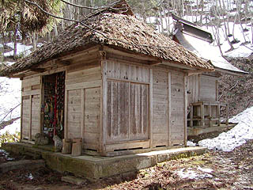 鳥居を潜り、階段を登ると小さな小さな社殿があった。これが犬の宮である。 何だか拍子抜けするような小ささだ。地味ともいえる。 しかし、近付いてみると・・・ 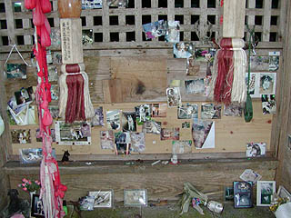 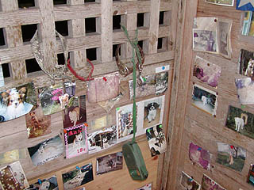 拝殿の正面には犬の写真が数多く貼付けられていた。 皆、愛犬を失った悲しさをこの社殿にぶつけているかのようだ。 この光景を見て最初に思い出したのは、同じ山形県内の最上三十三観音の寺々だった。 巡礼者が各々の札をお堂の外壁に貼付ける光景。そして亡くなった人の遺影をお堂の中に貼付けていく行為。 この犬の宮とあまりに酷似していまいか？ このように本来はパブリックであるはずの宗教施設にパーソナルな遺影を直に貼付けるという現象は山形ではよく見られる光景なのだろうか？いや、よくよく考えてみたら東北全般に見られる宗教行為のような気もする。 これは単なる現象面だけでなく、山形における宗教と個人の関係にも関わってくる重要な問題なので是非着目せねばならないが、面倒くさいので今度じっくり考えときます。 ただ、直感としていえるのはこの地方において個人の現世利益だったり先祖や身内（ペットも含む）の供養という個人的な事情が宗教上、非常に大きなウエイトを占めているのかな〜、という気がしている。勿論、何の裏付けもないが。 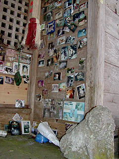 犬の宮だけに狛犬。 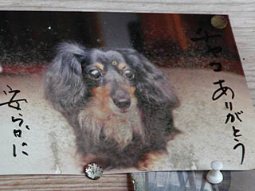 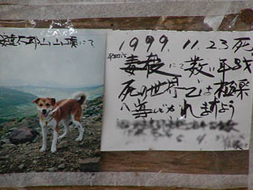 勿論、写真一枚一枚にそれぞれのドラマがある。 飼い主にしてみればわが子同様のペットの死である。何かせずにはいられない気持ちがこの犬の宮に向かわせるのだろう。
一方、こちらは猫の宮。 この猫の宮の由来は犬の宮の続編になっている。 犬の宮の由来となった2匹の犬が大狸を退治した約70年後、庄屋の家に飼われていた猫が異様な目付きをしていたので庄屋に斬られてしまったのだが（それも凄い話だが）、斬られた猫の首は宙を舞い、天井裏にいた大蛇の首に噛み付いて大蛇を殺してしまった。その大蛇こそ70年前、2匹の犬に退治された大狸の化身だったのだ。村人は斬られた猫の供養のために観音堂を建て、猫の宮と称して猫を大事にしたそうな。めでたしめでたし。 ・・・という事だそうで。 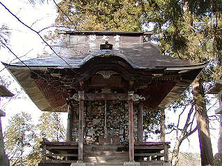 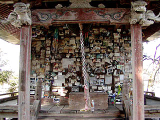 犬の宮に比べると造りは立派だが、やはり小さなお堂である。 その正面にはやはり大量の猫の写真が。 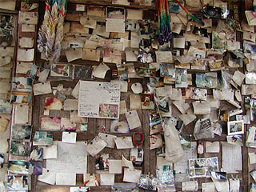 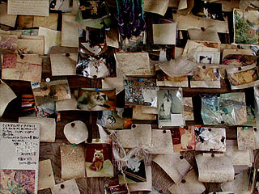 犬の宮に比べて遥かに写真が多い。 貼られた写真の褪色具合からすると、恐らく写真を貼るという習俗は犬の宮より猫の宮の方が先なのだろう。 やはり神社よりも観音堂に写真を貼る方が最上三十三観音巡礼などで札をベタベタ貼っているので抵抗が少ないのだろうか。 いずれにせよ猫の宮の方が圧倒的な迫力がある。 色褪せてしまい輪郭もおぼろげな写真は猫の種類や毛色など判らないのに目だけはしっかりこちらを向いている。 その無数の鋭い目付きに射すくめられるかのようだ。 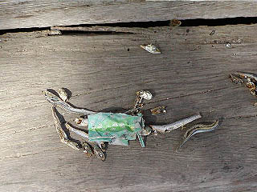 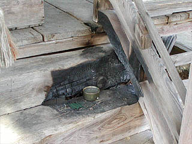 お宮の階段には煮干しが置かれていた。お供えのつもりなのだろうか、それとも近所の野良猫にでも餌を与えているのだろうか。 木の階段にお線香を直に置いたら燃えますよ。 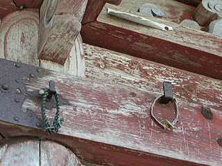 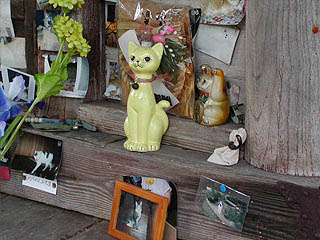 金具に掛けられた首輪がかなり切ない。 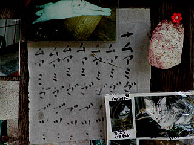 猫の写真と一緒に貼られていた経文。 やっぱり奉納する側としては最上三十三観音と同じようなノリなのだろう。 ペット供養という、比較的今日的なテーマから思わぬ深い歴史と深い宗教観、そして日本人の持つ深淵なる精神性までをも覗き込んだような気がした。 勿論、気がしただけです・・・ 犬猫の皆さん、御冥福をお祈り致します。ナムアミダブツ・・・
2004.4.
珍寺大道場 HOME